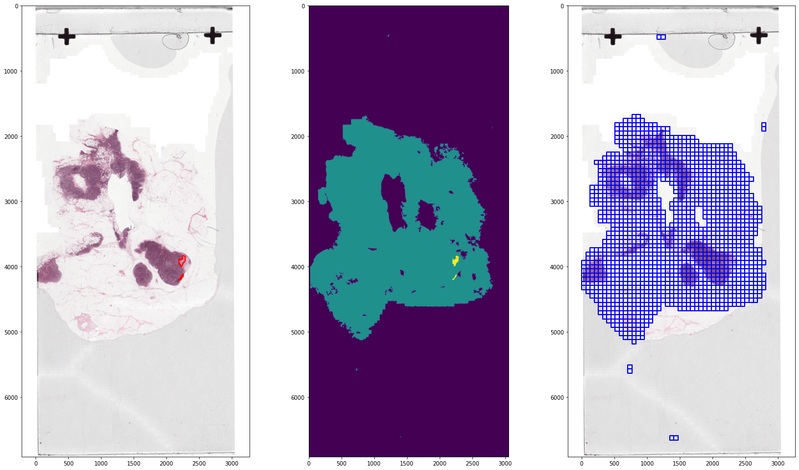
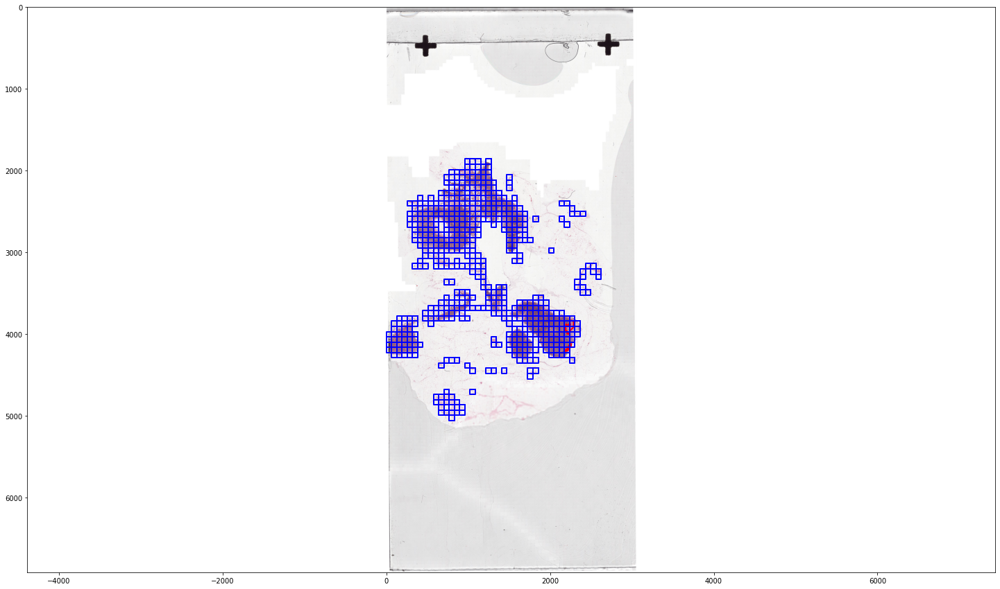

CAMELYON#
Pre-processing#
from pathlib import Path
tumor_001_image = Path("/home/user/CAMELYON16/images/tumor_001.tif")
tumor_001_annotation = Path("/home/user/CAMELYON16/annotations/tumor_001.xml")
tumor_001_mask = Path("/home/user/CAMELYON16/masks/tumor_001_mask.tif")
from wholeslidedata.annotation.parser import MaskAnnotationParser
from wholeslidedata.image.wholeslideimage import WholeSlideImage
from wholeslidedata.annotation.wholeslideannotation import WholeSlideAnnotation
from wholeslidedata.interoperability.asap.parser import AsapAnnotationParser
from wholeslidedata.interoperability.asap.backend import AsapWholeSlideImageBackend
from wholeslidedata.annotation.callbacks import TiledAnnotationCallback
from wholeslidedata.visualization.plotting import plot_annotations
from wholeslidedata.interoperability.asap.annotationwriter import write_asap_annotation
from wholeslidedata.annotation.selector import sort_by_label_value
from matplotlib import pyplot as plt
from colour import Color
import numpy as np
import cv2
from wholeslidedata.visualization.plotting import plot_batch
def is_in_color(patch):
# filter color
# Convert the input image to the HSV color space
hsv = cv2.cvtColor(patch, cv2.COLOR_RGB2HSV)
lower_bound = np.array([120,20,20])
upper_bound = np.array([310,255,255])
# Filter the image to select colors that look like red, pink, or purple
mask = cv2.inRange(hsv, lower_bound, upper_bound)
# Apply the mask to the input image
colored_image = cv2.bitwise_and(patch, patch, mask=mask)
if np.count_nonzero(colored_image) > (patch.shape[0] *patch.shape[1])//2:
return True
return False
def filter_tissue_tiles(wsa_tumor, wsa_tissue, output_folder):
annotations = []
annotations.extend(wsa_tumor.annotations)
mask_filterd_annotations = []
for annotation in wsa_tissue.annotations:
p = tumor_001_wsi.get_region_from_annotations([annotation], spacing=4.0, masked=False)
if is_in_color(p):
mask_filterd_annotations.append(annotation)
annotations.append(annotation)
output_folder = Path(output_folder)
output_folder.mkdir(exist_ok=True, parents=True)
output_path = Path(output_folder) / (wsa_tumor.path.stem + "_tissue.xml")
write_asap_annotation(annotations, output_path)
tumor_001_wsi = WholeSlideImage(tumor_001_image, backend=AsapWholeSlideImageBackend)
slide_80 = tumor_001_wsi.get_slide(8.0)
tumor_001_tissue = WholeSlideImage(tumor_001_mask, backend=AsapWholeSlideImageBackend)
tissue_80 = tumor_001_tissue.get_slide(8.0)
wsa_tumor = WholeSlideAnnotation(tumor_001_annotation, labels={'tumor': 2})
wsa_tissue = WholeSlideAnnotation(tumor_001_mask, labels={'tissue':1}, parser=MaskAnnotationParser(output_spacing=0.25, processing_spacing=8.0, shape=(2048, 2048)))
color_map={'tumor': Color('red').hex_l, 'tissue': Color('blue').hex_l}
fig, ax = plt.subplots(1, 3, figsize=(25,15))
ax[0].imshow(slide_80)
ax[1].imshow(tissue_80)
ax[2].imshow(slide_80)
plot_annotations(sort_by_label_value(wsa_tumor.annotations), scale=1/32, ax=ax[0], color_map=color_map)
plot_annotations(sort_by_label_value(wsa_tissue.annotations), scale=1/32, ax=ax[2], color_map=color_map)
ax[0].invert_yaxis()
ax[2].invert_yaxis()
plt.show()

filter_tissue_tiles(wsa_tumor, wsa_tissue, output_folder=Path('/home/user/camelyon_annotations/'))
wsa_tissue_filtered = WholeSlideAnnotation("/home/user/camelyon_annotations/tumor_001_tissue.xml")
fig, ax = plt.subplots(1, 1, figsize=(25,15))
ax.imshow(slide_80)
plot_annotations(sort_by_label_value(wsa_tissue_filtered.annotations), scale=1/32, ax=ax, color_map=color_map)
ax.invert_yaxis()
plt.show()

# run for subset
Batch generation#
from wholeslidedata.iterators import create_batch_iterator
from wholeslidedata.visualization.plotting import plot_batch, plot_one_hot_batch
from colour import Color
user_config = {
'wholeslidedata': {
'default': {
'yaml_source': {
'training': [
{
'wsi': {
'path': '/home/user/CAMELYON16/images/tumor_001.tif'
},
'wsa': {
'path': '/home/user/camelyon_annotations/tumor_001_tissue.xml'
}
}
]
},
'labels': {
'tissue': 0,
'tumor': 1,
},
'batch_shape': {
'batch_size': 4,
'spacing': 4.0,
'shape': [512, 512, 3]
}
}
}
}
mode = "training"
with create_batch_iterator(user_config=user_config,
mode=mode) as training_batch_generator:
print('First batch')
x_batch, y_batch, info = next(training_batch_generator)
plot_batch(x_batch, y_batch, alpha=0.4, color_values=['blue', 'red'])
print('Second batch')
x_batch, y_batch, info = next(training_batch_generator)
plot_batch(x_batch, y_batch, alpha=0.4, color_values=['blue', 'red'])
First batch
Second batch
One-hot-encoding#
user_config = {
'wholeslidedata': {
'default': {
'yaml_source': {
'training': [
{
'wsi': {
'path': '/home/user/CAMELYON16/images/tumor_001.tif'
},
'wsa': {
'path': '/home/user/camelyon_annotations/tumor_001_tissue.xml'
}
}
]
},
'labels': {
'tissue': 0,
'tumor': 1,
},
'batch_shape': {
'batch_size': 4,
'spacing': 4.0,
'shape': [512, 512, 3],
# add y_shape to indicate one-hot-encoding, we set the last channel to 2, because we have two classes: tissue and tumor
'y_shape': [512,512, 2],
},
# Various sample callbacks can be set. Here we add the One-hot-encoding sample callback, which turns the y_batch into a one-hot-encoded representation
"sample_callbacks": [
{
'*object': "wholeslidedata.samplers.callbacks.OneHotEncodingSampleCallback",
# This sample callbacks needs access to the label that can occur in the masks, we can retreive the possible via dataset._labels
'labels': "${dataset.labels}",
# Normally (and default setting) you would set this to True and ignore pixels that are not annotated.
# However because we can assume than anything that is not annotated is tissue, we can set this to False.
# This makes sure that all the y_patches have a corresponding labels for each pixel in the input patch
'ignore_zero': False,
}
]
}
}
}
mode = "training"
with create_batch_iterator(user_config=user_config,
mode=mode) as training_batch_generator:
color_map = {0: tuple(c*255 for c in Color('blue').rgb),
1: tuple(c*255 for c in Color('red').rgb)}
label_value_map = training_batch_generator.dataset.sample_labels.value_map
print('First batch')
x_batch, y_batch, info = next(training_batch_generator)
plot_one_hot_batch(x_batch, y_batch, color_map=color_map, label_value_map=label_value_map)
print('Second batch')
x_batch, y_batch, info = next(training_batch_generator)
plot_one_hot_batch(x_batch, y_batch, color_map=color_map, label_value_map=label_value_map)
First batch
Second batch